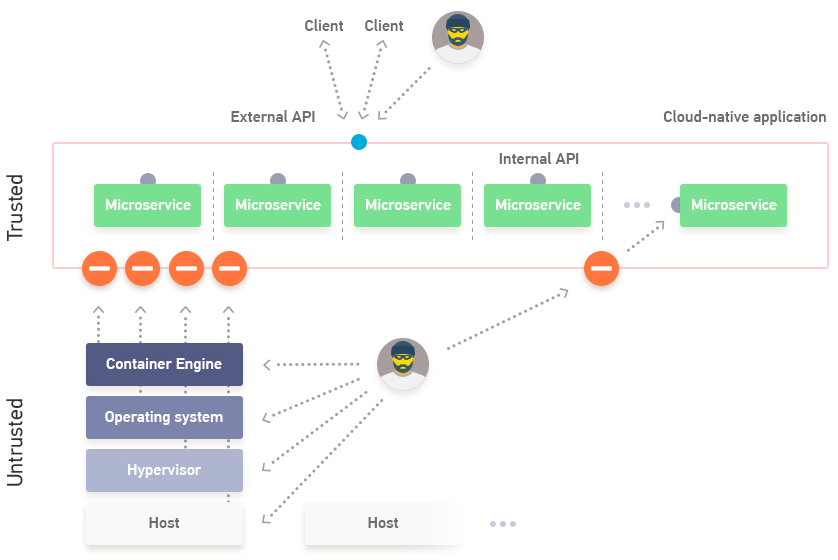
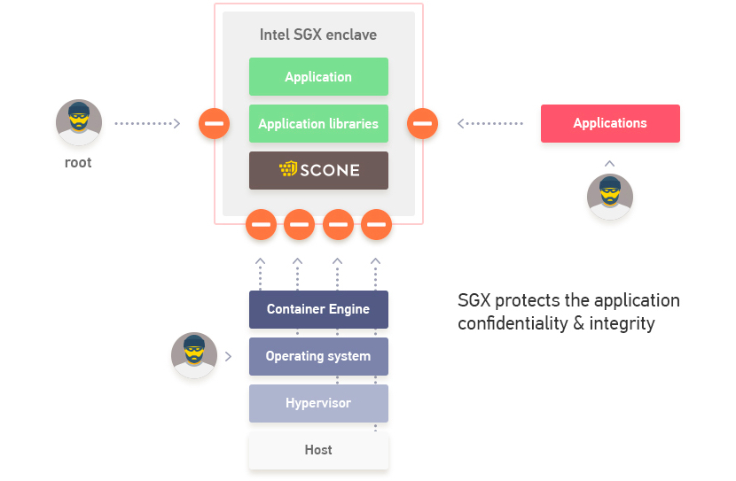
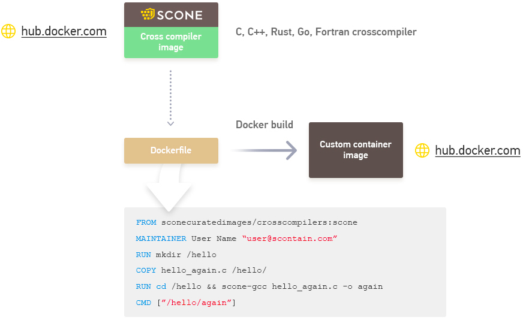
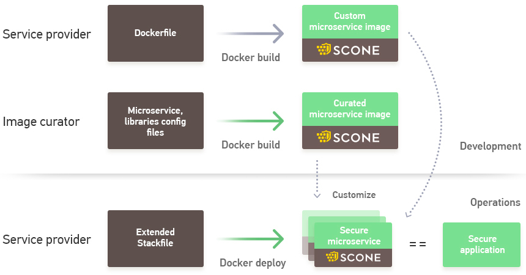
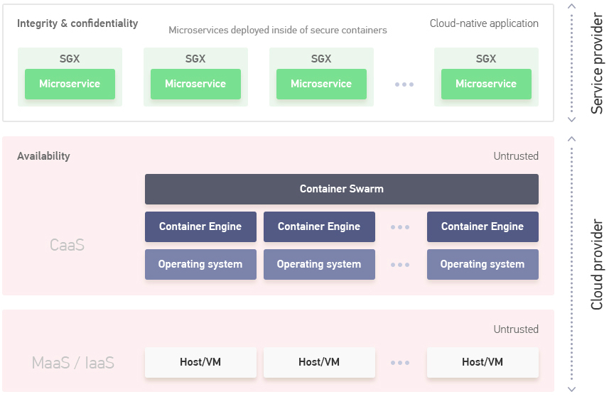
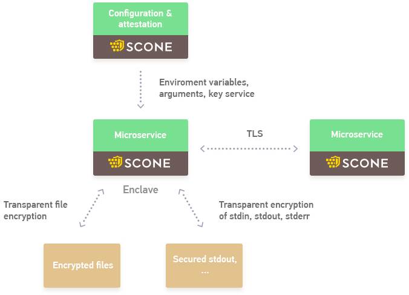

SCONE runs programs inside secure enclaves preventing even attackers with root access from stealing secrets from these programs.
SCONE helps to configure programs with secrets that can neither be read nor modified by attackers - even if they would have already taken control of the operating system and/or the hypervisor.
SCONE can transparently encrypt files and network traffic and in this way, it protects data from unauthorized access via the operating system and the hypervisor.
SCONE transparently attests programs to ensure that only the correct, unmodified programs are executing. This also prevents maleware to attach to programs.
SCONE is compatible with Docker permitting to run scontained applications with the help of compose files on top of Docker Swarm.
SCONE supports secure compose files to protect secrets that are visible in compose files.
SCONE supports curated images for many popular services like memcached, Apache, MySQL, etc.
SCONE features
SCONE's unique features explained
Application-Oriented Security
Ensure application security even in untrusted environments
Intel SGX Support
Encrypted main memory with Intel SGX ensures confidentialitiy and integrity
Cross-Compiler support
SCONE support cross-compilers for C, C++, Rust, Go and an interpreter for Python
Docker Integration
Support of Stack and Compose files to deploy an application
Shielding
Supports transparent encryption of files and network traffic
Curated SCONE Container Images
SCONE supports a set of standard services like nginx, etc
Technical Documentation
We provide developer-/operations-oriented documentation as well as scientific papers
We provide Docker container image of the SCONE documentation
Scientific Publications
We published several papers related to SCONE. A good starting point
to read is our OSDI 2016 paper
Services
We offer our customers different service levels
SCONE Community Edition
We provide a community edition of our services. This services run inside of enclaves in pre-release mode, i.e.,
one can view the memory content of these enclaves with an appropriate debugger
SCONE Standard Edition
Services run inside of enclaves - without the possibility of inspections. This includes business day support
SCONE Enterprise Edition
Services run inside of enclaves - without the possibility of inspections. Access to all source code. This includes priority support 24x7
Contact Us
If you are interested in the SCONE platform, SCONE curated images or if you want to work for us, please send email to scontain.com
Application-Oriented Security
SCONE provides application-oriented security, i.e.,
confidentiality as well as integrity of the application can be ensured even if executing in untrusted environments.
In untrusted environments, we have to protect against adversaries that have gained root access and can use this to read or even
modify our application's data.

SCONE supports naturally modern cloud-native applications that are composed of a set of microservices.
Our general recommendation is that each microservice runs inside of an
Intel SGX enclave.
SCONE helps to protect an application from attacks via the operating system, other applications as well as internal
APIs of the applications. In many cases, microservices only need to be recompiled with our
SCONE crosscompilers.
Intel SGX Enclaves
SCONE uses Intel SGX Enclaves to protect application components.

SCONE helps developers to run their applications inside of SGX enclaves. An Intel SGX enclave
facilitates an application to protect its data from accesses by all other software - even the operating system.
In particular, an application can protect all its data against adversaries with root access.
A root user cannot dump the main memory of an application to get access to all its keys. Often, configuration
files of applications are only protected by the filesystem. Again, a user with root access can read
these configuration files and all secrets that they might contain.
SCONE uses SGX to help to encrypt configuration files to protect these again.
SCONE crosscompiler support
SCONE support cross-compilers for C, C++, Rust, Go and Fortran.

SCONE supports different programming languages. We provide different base container
images that can be pulled from DockerHub. These images permit to create new container images with the help of Dockerfiles.
For more difficult builds, one would probably use makefiles.
We provide some examples in our SCONE tutorial.
SCONE Docker Integration
SCONE supports the Docker workflow of creating applications.

SCONE supports the development and operations of applications similar to that
of Docker. However, SCONE will run the microservices of an application inside of containers.
A developer can build custom microservices and combine these with standard secure container images
(i.e., curated images) that can be downloaded from DockerHub.
We provide some examples in our SCONE tutorial.

SCONE helps to ensure the confidentiality and integrity of an application.
The availability is ensured by the container cluster - currently, this is Docker Swarm.
The Docker Engines of the swarm are not trusted - in this way, we can decouple the security of an
application from the security of the Docker Swarm. The Docker Swarm might run on physical hosts (MaaS)
or on top of virtual machines (IaaS).
SCONE Shielding
SCONE supports transparent encryption of files, network traffic and stdin/stdout.

Legacy services like memcached, were designed for operating in a trusted environment.
Hence, they do not support TLS yet. SCONE supports the transparent encryption
of the network traffic. To do so, one can enable the network shield as part of the stack/compose file.
While some applications (like MySQL) can encrypt some of their files, most applications do not provide file
encryption. Hence, we provide a mechanism in SCONE to transparently encrypt files. This mechanism is switched on
via the stack/compose file of an application.
We also provide a mechanism to transparently encrypt stdin, stdout and stderr. Again,
this can be switched on in the stack/compose file of an application.
Some applications will get their secrets via environment variables or command line arguments. SCONE supports
the secure transfer of the environment variables and command line arguments via the SCONE configuration and
attestation service.
SCONE supports a set of curated images to simplify the task
of application developer. For most of the standard services, we will provide
a SCONE image that runs inside of an SGX enclave. The application developer
can customize the image via a Docker compose / stack file.
For offline viewing, we maintain a container image serving
the SCONE technical documentation.
To serve the SCONE technical documentation running in a local container, first, ensure
that you have Docker running. Second, you can view the documentation by executing the
following commands:
docker pull sconecuratedimages/sconedocu
docker run -d -p 8080:80 sconecuratedimages/sconedocu
open http://127.0.0.1:8080
SCONE-Related Papers
The following papers describe some of the technical aspects of SCONE.
SCONE: Secure Linux Containers with Intel SGX, USENIX, OSDI 2016
This paper describes how we support unmodified applications inside of enclaves. The focus is on our asynchronous system
call interface.
Authors: Sergei Arnautov, Bohdan Trach, Franz Gregor, Thomas Knauth, André Martin, Christian Priebe, Joshua Lind, Divya Muthukumaran, Daniel O'Keeffe, Mark L Stillwell, David Goltzsche, Dave Eyers, Rüdiger Kapitza, Peter Pietzuch, Christof Fetzer
Abstract: In multi-tenant environments, Linux containers managed by Docker or Kubernetes have a lower resource footprint, faster startup times, and higher I/O performance compared to virtual machines (VMs) on hypervisors. Yet their weaker isolation guarantees, enforced through software kernel mechanisms, make it easier for attackers to compromise the confidentiality and integrity of application data within containers.
We describe SCONE, a secure container mechanism for Docker that uses the SGX trusted execution support of Intel CPUs to protect container processes from outside attacks. The design of SCONE leads to (i) a small trusted computing base (TCB) and (ii) a low performance overhead: SCONE offers a secure C standard library interface that transparently encrypts/decrypts I/O data; to reduce the performance impact of thread synchronization and system calls within SGX enclaves, SCONE supports user-level threading and asynchronous system calls. Our evaluation shows that it protects unmodified applications with SGX, achieving 0.6x–1.2x of native throughput.
SGXBounds: Memory Safety for Shielded Execution, EuroSys 2017
To protect the code running inside of an enclave, we implemented a novel bounds checker for enclaves. While we had expected
to just be able to use MPX, we had to realized that MPX does not perform that well inside of enclaves. For details regarding
the overheads, please see this paper. This won the best paper award of EuroSys 2017.
Authors: D. Kuvaiskii, O. Oleksenko, S. Arnautov, B. Trach, P. Bhatotia, P. Felber, C. Fetzer
Abstract: Shielded execution based on Intel SGX provides strong security guarantees for legacy applications running on untrusted platforms. However, memory safety attacks such as Heartbleed can render the confidentiality and integrity properties of shielded execution completely ineffective. To prevent these attacks, the state-of-the-art memory-safety approaches can be used in the context of shielded execution. In this work, we first showcase that two prominent software- and hardware-based defenses, AddressSanitizer and Intel MPX respectively, are impractical for shielded execution due to high performance and memory overheads. This motivated our design of SGXBounds -- an efficient memory-safety approach for shielded execution exploiting the architectural features of Intel SGX. Our design is based on a simple combination of tagged pointers and compact memory layout. We implemented SGXBounds based on the LLVM compiler framework targeting unmodified multithreaded applications. Our evaluation using Phoenix, PARSEC, and RIPE benchmark suites shows that SGXBounds has performance and memory overheads of 18% and 0.1% respectively, while providing security guarantees similar to AddressSanitizer and Intel MPX. We have obtained similar results with four real-world case studies: SQLite, Memcached, Apache, and Nginx.
FFQ: A Fast Single-Producer/Multiple-Consumer Concurrent FIFO Queue, IPDPS 2017
This paper describes our new lock-free queue for our asynchronous system calls.
Authors: Sergei Arnautov, Pascal Felber, Christof Fetzer and Bohdan Trach
Abstract: With the spreading of multi-core architectures, operating systems and applications are becoming increasingly more concurrent and their scalability is often limited by the primitives used to synchronize the different hardware threads. In this paper, we address the problem of how to optimize the throughput of a system with multiple producer and consumer threads. Such applications typically synchronize their threads via multi- producer/multi-consumer FIFO queues, but existing solutions have poor scalability, as we could observe when designing a secure application framework that requires high-throughput communication between many concurrent threads. In our target system, however, the items enqueued by different producers do not necessarily need to be FIFO ordered. Hence, we propose a fast FIFO queue, FFQ, that aims at maximizing throughput by specializing the algorithm for single-producer/multiple-consumer settings: each producer has its own queue from which multiple consumers can concurrently dequeue. Furthermore, while we pro- vide a wait-free interface for producers, we limit ourselves to lock-free consumers to eliminate the need for helping. We also propose a multi-producer variant to show which synchronization operations we were able to remove by focusing on a single producer variant. Our evaluation analyses the performance using micro- benchmarks and compares our results with other state-of-the-art solutions: FFQ exhibits excellent performance and scalability.